Anemoskala: corpus and concordances for major Modern Greek poets
Table of Contents
Abstract
This paper reviews Anemoskala, an online resource offering a fully searchable textual corpus of major Modern Greek Poets (19th and 20th century), alongside with concordances and other scholarly components. Anemoskala is a digital resource originally designed to support teaching and research, and this overall goal is closely related to its scholarly identity, structure, and selection criteria for the corpus. The article assesses Anemoskala by paying attention to issues of editorial enrichment, data modelling and information architecture and interface design of the corpus’ data. Although the project follows a development workflow of high scholarly quality and rigor, parts of this work are currently missing from the end user as the resource does not allow any further reuse of its content while also lacking of a robust documentation of the technical part of its implementation, from encoding decisions to technologies used. As the project is still under development, suggestions related to its technical infrastructure, documentation, sustainability, reuse scenarios and overall user experience are also discussed.
Introduction
Anemoskala (Ανεμόσκαλα) 1 offers a fully searchable textual corpus of major Modern Greek Poets of 19th and 20th century, alongside with processing tools (concordance) and scholarly resources (biographies, bibliographies etc.). The digital resource is initially developed as a project by the Centre for the Greek Language (“Κέντρο της Ελληνικής Γλώσσας”),2 co-financed by the Greek state and the European Union (European Social Fund), through the Operational Programme “Educational and Lifelong Learning”, NSRF 2007-2013. Anemoskala is part of the Center’s broader digital ecosystem of educational resources called Psifides (“Ψηφίδες”),3 which includes text corpora, linguistic tools, multimedia resources, thematic essays etc. for teaching and research purposes of Modern Greek Literature.
Anemoskala has been developed as an online literary corpus with editorial qualities and advanced functionalities as well as one of the first digital scholarly initiatives in the field of Modern Greek Literary Studies, aiming to combine creatively and efficiently computational techniques with high quality scholarly standards. Although the field is familiar with previously developed literary corpora (mainly for Early Modern Greek texts in CD-ROM format)4 as well as with concordances in printed form, Anemoskala is the first freely available online literary corpus originally compiled as such alongside analytical tools. In addition, by creatively bringing together methodologies such as corpus creation, text encoding and data modelling, the project employs a challenging workflow, not without costs to its overall design, as I will discuss later on. Given the fragmented and slow adoption of digital technologies and tools in the field of Modern Greek Literary studies, Anemoskala stands not only as a reference point for its educational and scholarly contribution to the community but also as an effective touchstone for opening up the discussion on best practices, methodologies and tools around digital scholarship, Digital Humanities and Modern Greek Studies.
Selection and design
Anemoskala contains a fully searchable corpus of the poetic oeuvre of 16 major Modern Greek poets of the 19th and 20th century, including the two Greek Nobel Prize-winning poets Seferis and Elytis. The resource thus succeeds to present not a complete but nevertheless a useful panorama of the Modern Greek Poetry, from traditional to modern, covering also a long period of diglossia in Modern Greece. Although the language of the corpus is the Modern Greek, the corpus includes poetic works written in Katharevousa and Demotic, two distinct language variations of Modern Greek.5 This language pluralism, while historically interesting, is often a headache for corpus design and its further processing and this is why the project team has thoroughly established and developed a set of normalizations.
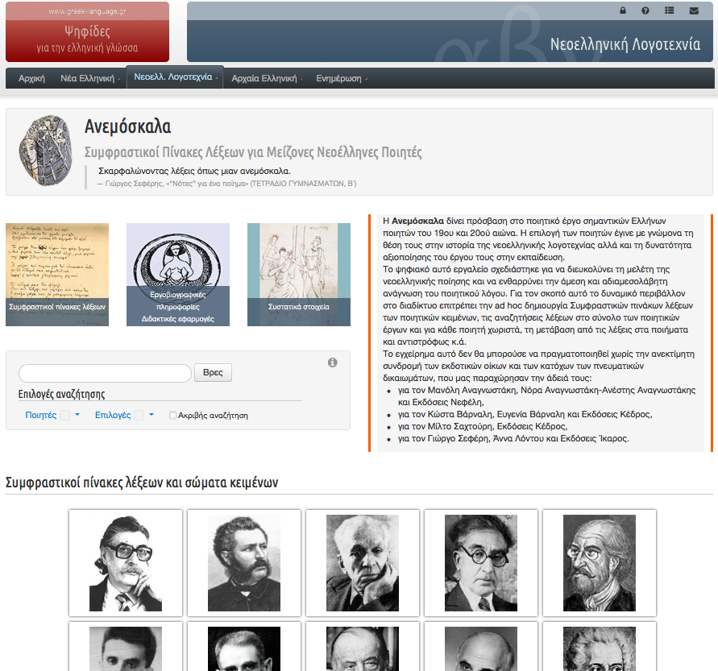
This multitude and heterogeneity of material offered might often blur the typology, the identity (is it a literary corpus, a concordance or a digital edition?), the development process and the uses of this text collection itself, but at the same time celebrates the double goal of the resource: to provide online access to scholarly edited text corpora of Modern Greek poetry as well to tools for further processing and analysis of the textual collection. According to Adolphs, the main aim of literary corpora is “the preservation of text resources and the development of integrated digital infrastructures to enable individual and collaborative research that is resource intensive”(Adolphs 2006, 32). In this line, Anemoskala aims to preserve the Modern Greek textual heritage in the digital realm by offering a scholarly curated digital corpus as well as further processing tools such as concordances in order “to facilitate the teaching and research of Modern Greek poetry and to enable the reading experience and pleasure of the poetic word”.6 Originally designed as a public-facing scholarly resource, its audience is also well-defined while broad in principle: Anemoskala seeks to address and support the educational and research needs of Modern Greek Literature teachers, students and researchers, in Greece and abroad, and at the same time stands as a reference point for everyone to read and enjoy an one of a kind collection of the Modern Greek poetic tradition.
The above-mentioned goals of the corpus are also well-represented in the selection process of its content. The selection criteria for poets to be included are in line with their position in the Modern Greek educational curriculum (from primary school to University level courses) as well as in the Modern Greek Literary history. The choice to stick to the (narrow) traditional canon, thus, corresponds to the educational goal of the resource and underlines the - somehow still strong - (all-male) canon formation variable also in the digital life of Modern Greek scholarship. As for now, users have access to full works by Anagnostakis, Valaoritis, Varnalis, Kalvos, Kariotakis, Palamas, Sachtouris, Seferis and Solomos and, due to copyright issues, limited access (i.e. contextual concordances) to poetic works by Sinopoulos, Ritsos, Sikelianos. Under development are currently the subcorpora including the poetic oeuvre of Eggonopoulos, Elytis and Embirikos. Even if the current size of the corpus is not available, the amount of the general concordance entries can be easily estimated to 57,674 tokens, plus 3,153 if we include the paratextual elements7; these numbers will significantly increase with with the addition of the remaining sub-corpora by Eggonopoulos, Elytis and Embirikos.
Editorial enrichment, data modelling and technical infrastructure
The poetic texts of the corpus were initially acquired from canonical printed editions (without keeping additional material such as commentary, notes) and then converted in electronic form through manual typing. At this stage, the texts are also carefully edited based on well-documented scholarly guidelines, established especially for this corpus; in other words, the digital corpus has not a print counterpart as such. These scholarly guidelines and the editorial enrichment of the texts are Anemoskala’s key scholarly features and they are also in line with the available functionalities of the corpus. The research team put a lot of energy and scholarly rigor in order to establish a set of rules and guidelines for the normalisation of the language, the orthography, the accentuation and the punctuation for the vast collection of poetic texts of different authors and chronological periods (19th & 20th century). While the normalization, as a process per se, is a usual practice for printed editions or for large anthologies aiming to modernize the texts, here it mainly enables the further digital processing of the textual material (i.e. advanced & customized searches, concordances etc.). Alongside modernization, special editorial decisions have been made in a case-by-case basis for the restructuring of individual poetic works (where there is no canonical edition of ‘Collected works’ available).
Οnce scholarly edited, the text corpus is tokenized and enriched with
annotations and mark-up, having (again) in mind the concordance function of the
resource. A TEI-based schema with project-specific extensions is used as a data
model for the corpus in order to adjust to the needs of a dynamically generated
and searchable concordance that harvests textual data. In more detail,
Anemoskala employs a three-fold TEI markup strategy for further indexing the
textual corpus of each author, which is also the basic unit of the architecture:
1) structural markup (as of the hierarchy of the textual content, e.g. poet’s
oeuvre <text>, poems’ collections and poems
<div> , poems’ titles <head>, verse
<l>), 2) procedural markup (as of the poems’
typographical layout, e.g. emphasized text <hi>), 3) semantic
markup (paratextual features such as motti <epigraph>, place
<placeName>, person <name>, speakers
<speaker>, translation <foreign>,
authorial or editorial notes <note> etc.8
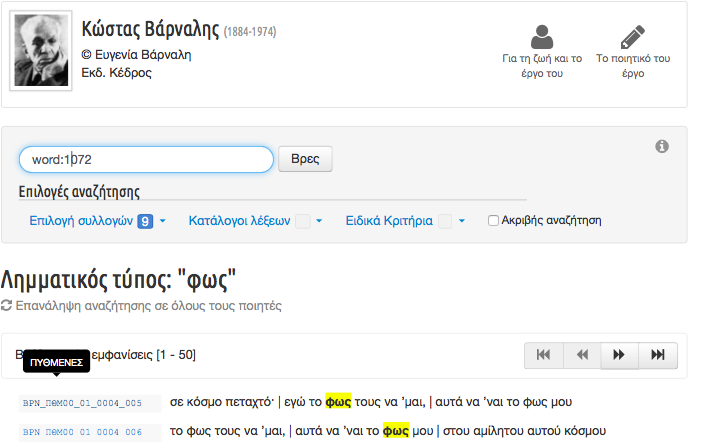 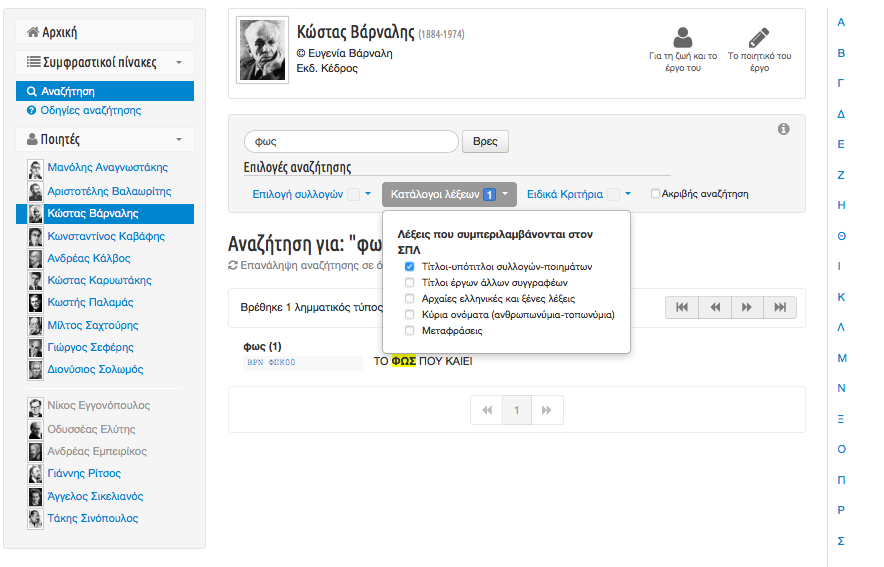
Based on such a workflow9, the creation of the corpus with rich tagging of text properties offers to the user not only a scholarly edited text but also the option to perform advanced searches on the annotated corpus. From an operational point of view, designing and developing a TEI-encoding strategy in order to serve a specific processing task or tool (in this case, that of the concordance) alongside the non-availability of the TEI files, are decisions that significantly limit the functionality and (re)use of the project’s outcomes from the outset. This is not a common decision neither for a text corpus enterprise nor for a TEI-based project, as the main virtues of these type of projects are the outcomes’ flexibility and interoperability: a painstakingly marked-up text or a corpus can be further manipulated, visualized, processed in many ways, even more than its original creators ever could have imagined. This endeavour of mirroring the project’s methodological decisions to a specific functionality with limited analytical power is manifested in Anemoskala’s case also from the fact that the editorial and scholarly decisions can be found under the “Search guidelines” tab. These compromises are well-known to the project team; in Akritidou’s words:
the rich encoding required for the (digital) edition of the texts, especially the editions of poetic texts alongside concordances, does not merely act as an addition to the traditional tasks of word lists creation, stylistic research et.c. but poses itself a series of interpretation issues that further reveal the non-neutrality of the digital (and print) editing decisions.
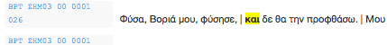
Content design, interface and navigation
Anemoskala succeeds in structuring this rich textual corpus containing the oeuvre of major Modern Greek poets alongside a vast amount of scholarly material and analytical tools by implementing a content design that further manifests and enhances its original scholarly aims. Having a double scholarly identity, as a textual corpus and as a concordance tool (based on the corpus), Anemoskala’s multi-level content architecture and interface design are precisely founded on this double axis while enabling their multiple interconnections.
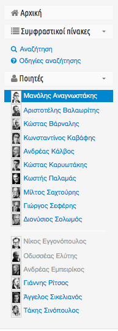
The double character of the resource is also well-captured in the fixed left-side navigation bar, available throughout the resource, which contains, in addition to the “Home page” button (Αρχική), a first section under “Concordances”, with the sub-tabs “Search” (Aναζήτηση) (i.e. general concordance) and “Search guidelines” (Οδηγίες αναζήτησης) and a second section under “Poets”, with a list of all poets under separate active tabs (except from poets whose work is under copyright) (Fig. 5). Using these two sections in the navigation bar, the user can easily switch between the general concordance function and an individual poet’s corpus, or even navigate through a different poet’s corpus by making an adequate choice from the list of poets.
Not surprisingly, there are two main ways to navigate and use this resource, corresponding mainly to its double identity, as a textual corpus and as a concordance tool.
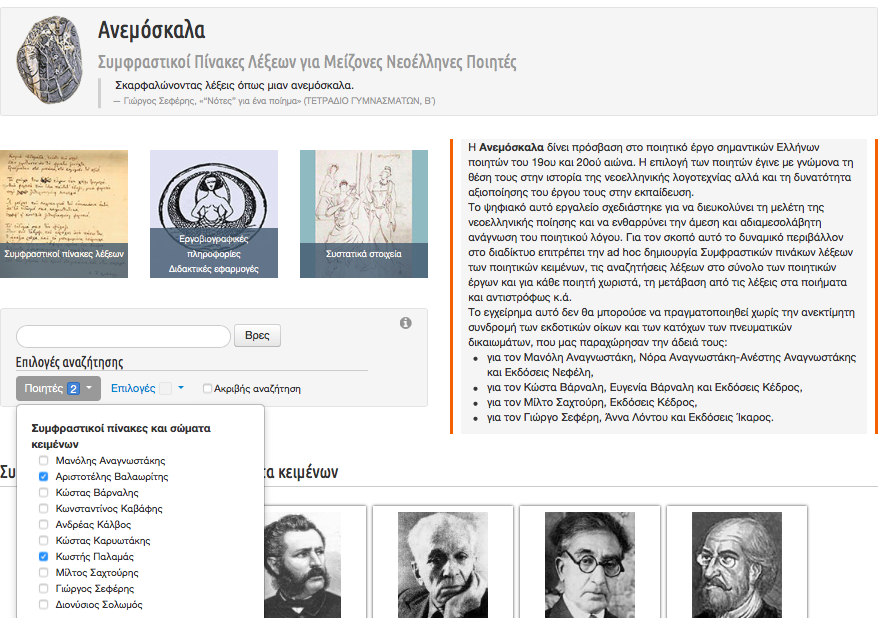 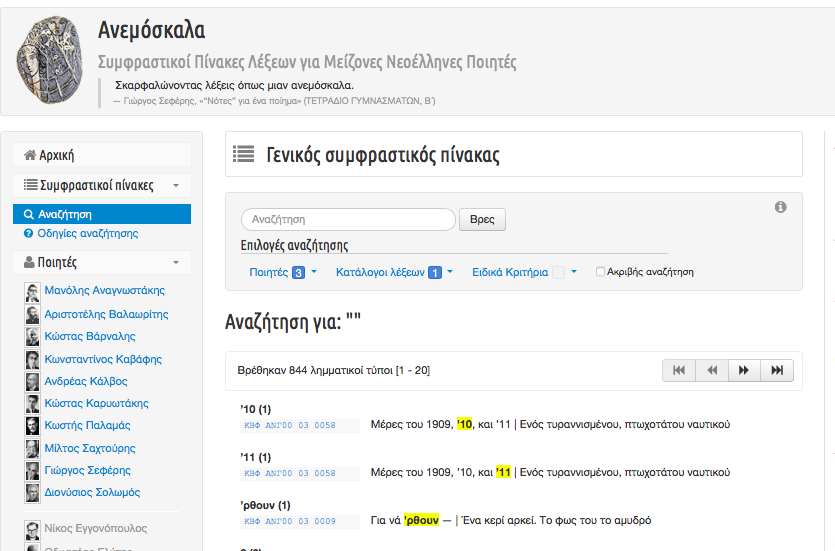
On the other hand, a user wishing to access a poet’s digital corpus can choose and access the individual corpus using either the relevant image link on the “Home page” or the poet’s name from the list of poets in the main navigation bar.
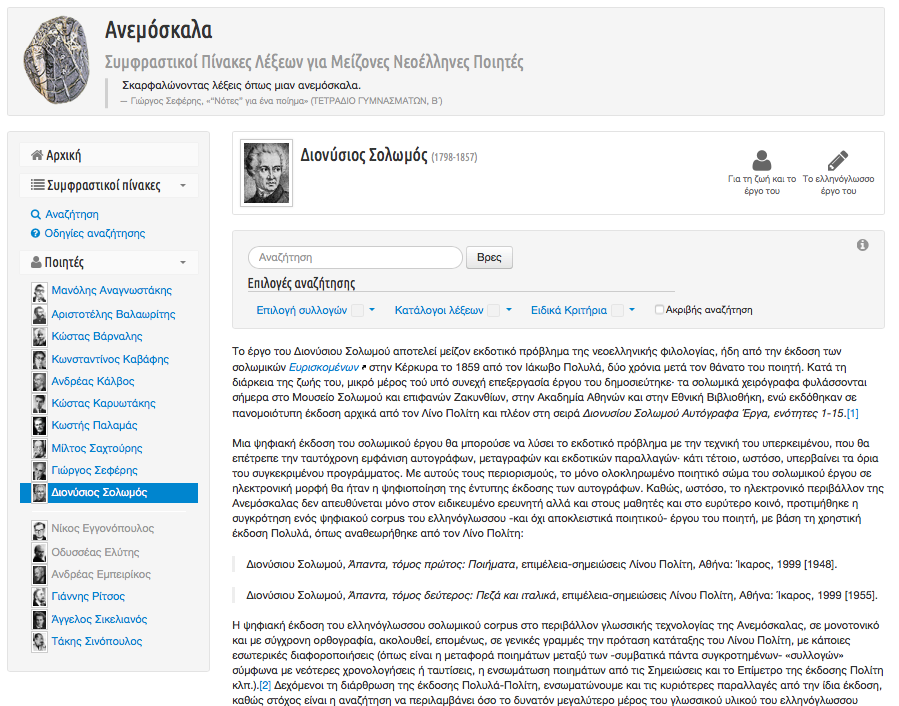 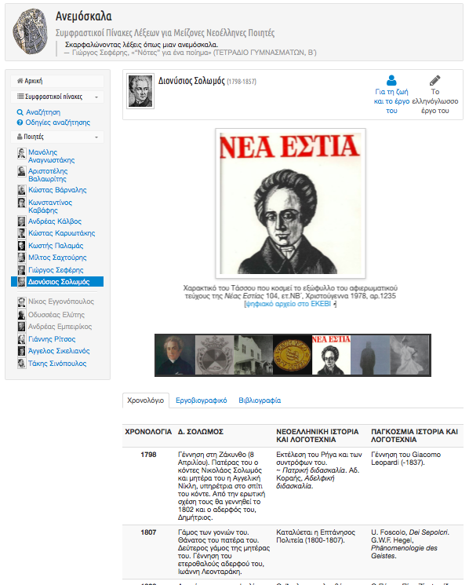 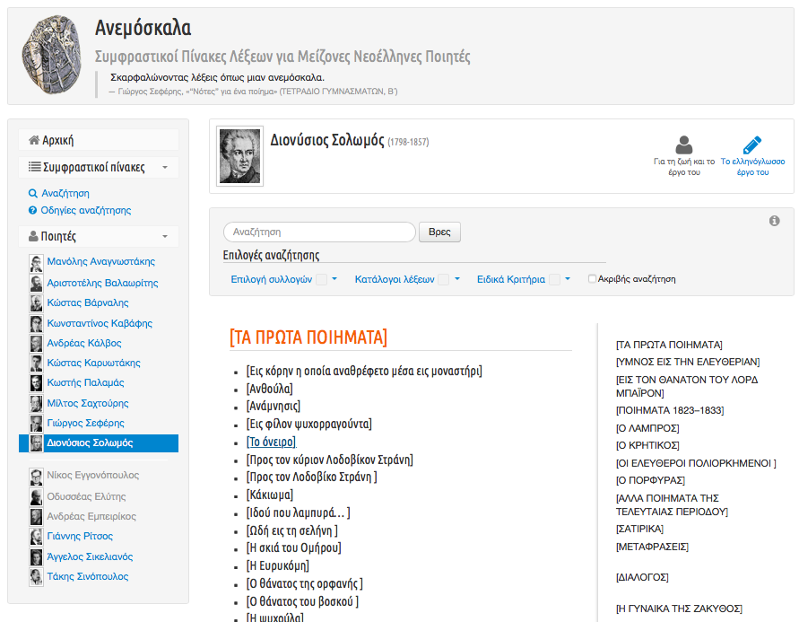
- a central navigation bar with
- the “poet’s ID” (poet’s name, date of birth & death, picture, copyright information) (Fig. 8),
- a tab to “Life and work” (“Για τη ζωή και το έργο"), containing rich multimedia contextual material, using content (e.g.images, facsimiles, high-quality scholarly or editorial notes) also from external providers (e.g. Europeana, University Libraries, Public Domain) (Fig. 9), and
- a tab to “His Poetic oeuvre” (“Το ποιητικό του έργο”), accessing his text corpus, structured as a hyperlinked table of contents with collections/ groups of poems (Fig. 10),
- a faceted search bar, containing the search box and four (4) search categories (Collections, Word lists, Special criteria, Exact Match - in separate drop down multiple select checkbox lists) and
- an introductory-editorial note, which is only available in the entry page of each scholarly unit.
The user can access, navigate and search through the corpus of a selected poet either by using the table of contents of his oeuvre or by performing a number of advanced searches using the faceted search bar. Furthermore, the user can navigate from the search results to the full text and vice versa, using the available reference abbreviations of the encoding, except from copyrighted works.
In terms of interface design, Anemoskala overall offers a simple and clear layout that further facilitates user experience and navigation through the vast content, functionalities and complex architecture of the resource. More specifically, the individual scholarly units for the 16 poets share the same basic structure, layout and functionalities. This design choice on the one hand contributes to a uniform visual identity and gives the sense of a ‘seriality’ to the textual corpus as a whole and on the other hand creates a pattern for the user’s navigation. Specifically, for the Concordance function, either for an individual corpus or a group of subcorpora, the fixed faceted search bar with clear categories and the navigation guides (arrows, pagination, number of results) are well-designed; a “clear previous search” option will also facilitate the user navigation.
Furthermore, the vertical navigation bar along the left is a wise design decision due to the density of content (i.e. the list of 16 poets) as its purpose is chiefly to support the user’s browsing. While the navigation bar across the entire resource assists the user to understand the resource’s structure and to navigate throughout, the absence of this very navigation bar from the “Home Page” creates a disruption in the user flow. Instead of making information more easily accessible, this somehow unnecessary complexity actually makes it more difficult for end-users to get the information they are looking for. Just to give two examples of this design failure: the “Contributors” page is only accessible via the “Home Page”; the faceted search bar in the “Home Page” and the faceted search bar under “Search” in the navigation bar, both of them designed for the general concordance, have slightly different facets). In addition, as individual rich web environments are created around each scholarly unit/poet, a (local) ‘Home button’ per unit is also required. As the multiplicity of paths to enter the same piece of information or to perform the same task is one of the main characteristics of the resource, a breadcrumbs trail, a ‘back’ button and a generic ‘search’ button for the resource in its entirety would be welcoming additions in order to boost user experience.
Τhe consistent use of graphical user interface elements throughout the site, especially input controls (image links with mouse hovers, buttons, text fields, checkbox lists, icons and message boxes) and navigation components (arrows and pagination mainly for the concordance results), is of great assistance to the user in performing main navigation tasks with efficiency and satisfaction while keeping to an aesthetic awareness. All in all, the front-end navigation adequately reflects the back-end content architecture alongside a clear, functional and uniform design that succeeds in delivering a smooth user experience. As currently Anemoskala is still under development (without a clear completion plan available), features of responsive web design alongside a URL-structuring strategy will significantly improve the discoverability and the overall usability of the resource.
Access & Publication
However, in spite of the many advantages of a free readily available edited corpus of Modern Greek Poetry, since Anemoskala’s conception there have been two open issues regarding the level of ‘access’ offered by the resource.
Firstly, due to copyright, there is a limited access to a number of works for which the project was not able to obtain permission for full online access (i.e. works by other poets of "Generation of the Thirties" and the first post-war generation). The status of intellectual rights and copyright of each poet is well-documented in the individual introductory-editorial note of each scholarly unit and further details regarding the publication terms are given there. That means, the user can still search the copyrighted subcorpus and visualise the search results only through the concordance function at line level but then she can’t access the full text to which it belongs.
Secondly, while Anemoskala achieves to offer a rich textual corpus of Modern Greek Poetry, its publication policy does not allow any kind of download, export or further reuse of any part of the textual corpus (plain text, TEI-XML files, metadata, concordance results). According to the project’s disclaimer, “the copyright to the digital encoded version is held by the Centre for the Greek Language, in conjunction with the various holders of intellectual property, and redistribution is not allowed in order to protect the rights of the print edition publishers”.
By making a literary corpus available on ‘read-only’ or ‘see-but-not-touch’ mode, for browsing (where full text is not copyrighted) and/or for performing a specific and highly controlled (using the guided navigation in the faceted search) analytical task (concordances), the project becomes ‘self-limited’ as of the possible visualisations and uses of the data. As Hockey reminds us in one of the first books on the development and the uses of electronic texts in the Humanities back in 2000:
the production of high-quality electronic texts and resources is very labour intensive. It is imperative to find ways of making these resources as broadly multipurpose and reusable as possible. This must be done in the context of different theoretical perspectives in scholarship and in the context of a broadening range of users.
Literary corpora, as Anemoskala, and in general text collections should not be seen as the end-product or an end in itself but as the starting point for sophisticated computational processing activities: for critical or genetic digital editions; for a number of large-scale comparative approaches and methods of distant reading through their tagging and availability of the metadata; for a vast spectrum of data representation and computational analysis techniques such as data visualizations, topic modelling, stylometry, text mining, lexical patterning, or even machine learning etc. As for now, Anemoskala’s corpus is not used in any other processing framework besides the original concordance function, the results of which could be then consulted only to support traditional scholarly outputs (articles, monographs et.c.). On the contrary, such a rich corpus could be seen as the starting point of highly advanced computational analysis endeavours to explore, for example, the diachronic evolution of literary themes or linguistic patterns. Such computationally intensive approaches to the literary stand mainly as a hypothesis testing device for literary analysis and as markers of (inter)disciplinary methodological shifts: “text analysis is to participate in literary critical endeavour in some manner beyond fact-checking... to assist the critic in the unfolding of interpretative possibilities… its purpose should be to generate further ‘evidence’, [which] is not definitive but suggestive of grander arguments and schemes” (Ramsay, 2011, 10). After all, digital tools in textual studies enable us to move beyond ‘screen essentialism’ towards experimentation of epistemological and methodological boundaries.
Documentation and long-term maintenance
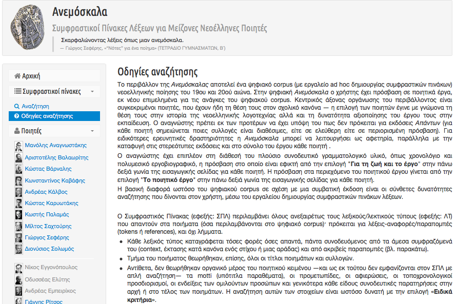
On the other hand, a detailed technical documentation, including the infrastructure and the data architecture employed, is highly missing - the technical development of the resource has been undertaken by an external collaborator (Centre for Research and Technology Hellas - CERTH). This lack of any kind of documentation regarding the technical implementation is more clearly manifested when compared with the available detailed and laborious philological documentation. In my eyes, this omission also manifests the still influential distinction between scholarly and technical work, especially in fields and communities of practice such as Modern Greek Studies with limited exposure and institutional support towards the field of digital scholarship. In general, the creation of a digital textual collection and resource demands and in the same time celebrates the creative, interdisciplinary and collaborative work of textual and literary scholars, computational linguists, digital humanists and computer engineers. All this combined knowledge and expertise should be well-documented, openly available for review and consultation for future similar attempts.
As for project documentation, the resource provides detailed description of the interdisciplinary project team, their roles and contribution under a dedicated image link (Contents” / Συστατικά στοιχεία) available only at the “Home page”. It should also be mentioned that although the content of the resource is regularly updated and adequately documented as such, including quality control provision, a citation mechanism is not yet provided as part of its scholarly documentation, significantly reducing its scholarly usability in the short and in the long term. Finally, given the fact that Anemoskala is a publicly funded project offering freely available textual resources that are widely used in various educational and research contexts, a robust sustainability plan for the long-term maintenance and preservation would be also highly expected. To this end, a real-world assessment of its actual scholarly use cases as well as a collaborations and partnerships plan with libraries, archives, publishers and other stakeholders in order to enrich the textual collection with cross-domain content and outputs could provide interesting insights for the future development plan.
Overall conclusions and recommendations
To conclude, Anemoskala is an invaluable digital scholarly resource for the educational and research community of Modern Greek Literary studies by providing a gateway for high-quality edited literary corpora, analytical tools, alongside impressive media-rich contextual material, in an accessible, overall easy for the user to navigate way. Besides its scholarly and philological virtues, Anemoskala stands also as a milestone for the digital scholarship in Modern Greek Humanities by promoting and supporting the adoption of Digital Humanities best practices, established standards, computational technologies, and collaborative workflows among the Greek research community.
As an ongoing project with expected progress in the next months, we would expect the resource not only to grow in content, textual data and analytical power but also to amend inconsistencies and gaps in the documentation and small design failures that will further enhance its usability and its contribution to the field. Anemoskala can also generate and benefit from vivid and creative discussions regarding the methodology, the development, the tools and the applications of digital corpora and text collections in various interdisciplinary contexts, both in national and international level. In order to play such as role, it is important to create and provide robust and transparent documentation of the rigorous editorial work, the technical infrastructure and implementation and the overall workflow (an English version of the documentation would be also of high importance).
As mentioned earlier in this review, the lack of user empowerment and engagement with the textual data is, in my view, one of the major shortcomings of Anemoskala. I claim that the browsing and search options should by no means be the end-goal of a textual collection development. On the contrary, the audience’s creative and productive interaction with the collection can be enhanced by allowing users to read and/or download various textual formats and contents, to creatively reuse them, also through aggregation mechanisms (API); by offering additional advanced analytical and interactive tools; by enabling web 2.0 functionalities and environments (e.g. Wikis) for users to contribute, comment or collaboratively annotate the texts of the collection. By opening up Anemoskala to its users in a more interactive and creative way, the project team should have in mind that communication should not be one-way traffic on the resource - especially when digital-natives, such as pupils and students, are among the audience. In fact, a dialogue between the resource and the intended audience should be genuinely established: a “contact” page, social media plugins, alongside an active community space with use cases, news and discussions, will allow the project team to “meet and learn” from its users and their needs.
Finally, Anemoskala’s digital text collection corpus can be placed as the starting point of an ecosystem of digital scholarship initiatives and projects that will build upon the existing edited corpus. This infrastructure logic, fundamental for the development and longevity of digital text corpora and resources, given the examples of Oxford Text Archive10 or the Women’s Writers Project11, is a sustainable operational model for producing digital textual resources of ongoing scholarly relevance and contributing to the advancement of digital scholarship in the field at large. Hopefully Anemoskala will capitalise expertise, achievements, and experiences on digital text corpus development and will raise expectations not only for quality digital scholarly resources in the field but also for a Modern Greek digital literary studies agenda and beyond.
Bibliography
- Adolphs, Svenja, 2006. Introducing electronic text analysis. A practical guide for language and literary studies, Routledge.
- Akritidou, Maria 2015. “Modern Greek Studies in the digital era. The development of a digital corpus of Modern Greek Poetry at CGL using the TEI international standard” [“Οι νεοελληνικές σπουδές μπροστά στην ψηφιακή πραγματικότητα. Η ανάπτυξη ψηφιακού σώματος νεοελληνικής ποίησης από το ΚΕΓ με το διεθνές πρότυπο Text Encoding Initiative”], Proceedings 5th European Congress of Modern Greek Studies of the European Society of Modern Greek Studies Thessaloniki, 2-5 October 2014 Continuities, Discontinuities, Ruptures in the Greek World (1204-2014): Economy, Society, History, Literature, Vol.IV, K.Dimadis (ed), Athens: Society of Modern Greek Studies, p.663-691.
- Hockey, Susan, 2004 [2000]. Electronic Texts in the Humanities, Oxford University Press.
- Neuber, Frederike & Henny-Krahmer, Ulrike, 2017. “Editorial: Reviewing Digital Text Collections”, RIDE, Issue 6: Text Collections, https://web.archive.org/web/20180222141455/https://ride.i-d-e.de/issues/issue-6/editorial-reviewing-digital-text-collections/.
- Ramsay, Stephen, 2011. Reading Machines: Toward and Algorithmic Criticism (Topics in the Digital Humanities), University of Illinois Press.
Notes
- The name of the resource “Anemoskala” (rope ladder) is derived from a phrase of a poem of George Seferis, also included in the corpus: “climbing words as if up a rope ladder” (“Σκαρφαλώνοντας λέξεις όπως μιαν ανεμόσκαλα”). ↑
- https://web.archive.org/web/20180217084726/http://greeklanguage.gr/. ↑
- https://web.archive.org/web/20180217084813/http://www.greek-language.gr/digitalResources/index.html. ↑
- Philippides, Dia M. L. & Holton David (with technical assistance John L. Dawson), 2014. Erotokritos. As the disk spins. CD-ROM (PC/MAC) [Ερωτόκριτος: Του δίσκου τα γυρίσματα]. Athens, Ermis Publications. ↑
- Katharevousa, a conservative form of the Modern Greek language conceived in the early 19th century, was widely used in the public sector and literature, while Demotiki, the modern vernacular form of the Greek language, was used mainly in everyday life. The tension between the two linguistic varieties, also known as the ‘Greek language question’, was a highly controversial dispute in the 19th and 20th centuries about the official language of the Greek nation, also linked to national identity issues, and it was finally resolved in 1976 in favour of Demotic. See also Peter Mackridge, 1985, The Modern Greek Language, Oxford University Press. ↑
- “Introductory Note” https://web.archive.org/web/20180217085234/http://www.greek-language.gr/digitalResources/literature/tools/concordance/index.html. ↑
- Amounts estimated from the total list of tokens available under the full search function. ↑
- This additional information about the encoding has been supplied on private email communication with Maria Akritidou, part of the scientific team coordinating the project - I am more than grateful to Maria for being so helpful and generous in providing parts of information regarding several aspects of the resource’s development. As I will argue later on, more of this information should be made available on the resource’s documentation. ↑
- Especially for the case of the poetic work of George Seferis, the workflow is different. The original printed concordance was first converted to a database structure and then the work of Seferis was compiled around this service and used as a point of entry to the concordance and vice versa. ↑
- https://web.archive.org/web/20180217085326/https://ota.ox.ac.uk/. ↑
- https://web.archive.org/web/20180217085638/http://www.wwp.northeastern.edu/. ↑
@article{anemoskala,
author = {Sichani, Anna-Maria},
title = {Anemoskala: corpus and concordances for major Modern Greek poets},
journal = {RIDE – A review journal for digital editions and resources},
number = {8},
year = {2018},
doi = {10.18716/ride.a.8.1},
url = {https://doi.org/10.18716/ride.a.8.1},
}TY - JOUR
AU - Sichani, Anna-Maria
TI - Anemoskala: corpus and concordances for major Modern Greek poets
T2 - RIDE – A review journal for digital editions and resources
IS - 8
PY - 2018
DA - 2018/02
DO - 10.18716/ride.a.8.1
UR - https://doi.org/10.18716/ride.a.8.1
PB - Institut für Dokumentologie und Editorik e. V.
LA - en
ER - Sichani, A. (2018). Anemoskala: corpus and concordances for major Modern Greek poets. RIDE – A review journal for digital editions and resources, (8). https://doi.org/10.18716/ride.a.8.1Sichani, Anna-Maria. "Anemoskala: corpus and concordances for major Modern Greek poets." RIDE – A review journal for digital editions and resources, no. 8, 2018. https://doi.org/10.18716/ride.a.8.1.Sichani, Anna-Maria. "Anemoskala: corpus and concordances for major Modern Greek poets." RIDE – A review journal for digital editions and resources, no. 8 (2018). https://doi.org/10.18716/ride.a.8.1.